Termostatos con sonda incorporada. Sistema de medida de capilar con sonda a dilatación de líquido.
Caja compuesta de cuerpo y tapa en aluminio inyectado. Dos versiones: Tapa ciega y Tapa con ventana. Grado de estanqueidad IP 65 (DIN 40 050).
Las fundas de protección del sensor, se fabrican en cobre, latón y Acero inox. AISI 304, etc. y están disponibles en 4 longitudes estándar. Salida posterior o lateral.
Rosca de conexión normalizada de ½" Gas, otras medidas disponibles.
Escala de alta resolución exenta de paralaje permite una fácil fijación del punto de consigna.
Termostato capilar a distancia
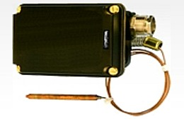
Termostato estanco capilar apropiado para lugares y maquinaria expuesta a vibraciones, pues permite situar fuera de su zona de influencia la cabeza del aparato.
El sistema de medida es de capilar con sonda a dilatación de líquido.
Caja compuesta de cuerpo y tapa en aluminio inyectado. Dos versiones: Tapa ciega y Tapa con ventana. Grado de estanqueidad IP 65 (DIN 40 050).
Escala de alta resolución exenta de paralaje permite una fácil fijación del punto de consigna.
Longitud del capilar estándar de 1 metro. Puede suministrarse con longitudes de capilar hasta 3 metros.
Termostato regulable TR2
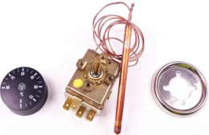
Termostato bulbo capilar regulable TR2. Poder de ruptura: 15(2,5)A 250V.
Contactos conmutados SPDT.
Conexión mediante fastons.
Capilar de un metro y bulbo de cobre.
Diversas escalas de regulación, 0-90°C, 0-40°C, 70-210°C, etc.
Termostato limitador seguridad LS-1
Termostato de seguridad dilación a líquido. Rearme manual.
Bulbo de cobre Ø6,5 x 95 mm, capilar de 1000mm.
Poder de ruptura: 16(6)A/250V. Cierra el contacto por aumento de temperatura.
LS-1 (Seguridad regul. 90 a 110°C).
LS-1 (Seguridad fija 100°C.)
Termostato bulbo capilar tripolares
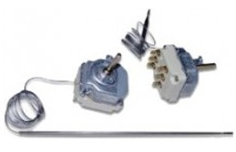
Termostatos tripolares a ruptura brusca.
Diferencial de 2 a 13 °C según escalas de temperatura.
Capilares y bulbos en Acero Inoxidable. Conexión a fastons 6,3 mm.
Termostato inmersión TC-2
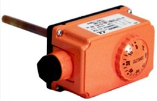
Acuastato. Termostato regulable. Poder de ruptura: 10(2,5)A 250V
Contacto SPDT conmutado. Modelos contacto simple o contacto doble.
Rango de 0 a 90°C.
Vaina latón incluida L=100mm, rosca conexión ½"G.
Caja protección IP40, color naranja.
Termostato regulable tubería BRC
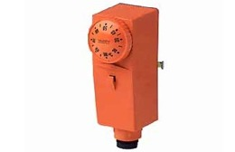
Termostato regulable escala: 30 a 90°C.
Diferencial: 8±3N (ajustable).
Poder de ruptura: 10(2,5)A 250V.
Caja protección IP20, color: naranja.
Fijación por muelle abrazadera.
Termostato líquidos agresivos
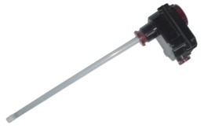
Termostato a bulbo y capilar con rango de regulación 0/90 °C de rearme automático, introducido en un vaina de longitud 360mm de en Titanio, Incoloy-825 ó PTFE, según modelos.
Caja de baquelita que protege al cuerpo del termostato contra salpicaduras de los ácidos o bases.
Termostato ambiente a distancia
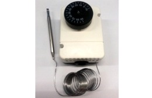
Termostato mecánico de bulbo y capilar de Inox.
Dimensiones 65x90x50mm.
Poder ruptura: 16(4)A 230V.
Mando con topes, caja IP50.
Diversos rangos de temperatura.
Termostato ambiente mecánico
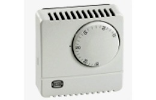
Amplia gama de termostatos de ambiente, para calefacción/refrigeración.
Modelos con luz piloto, interruptor macha-paro, interruptor frio/paro/calor.
Con velocidades de climatización.
Dimensiones 76x76x38mm.
Escala de 6 a 30°C con topes para bloquear botón por tramo o fijo.
Termostato ambiente digital
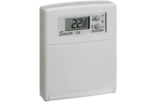
Dimensiones 100x80x20mm.
Función marcha/paro y antihielo.
Diferencial ajustable de 0,1 a 2°C.
Doble consigna confort y economía.
Bloqueo escala de regulación.
Alimentación a pilas de 1,5V AAA alcalinas.
Cronotermostato semanal
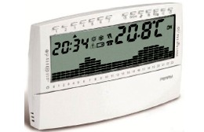
Alimentación 3V – 2x1.5V AAA alcalinas. Dimensiones (AxPxH) 133 x 26 x 90
Salida con 1 contacto conmutado libre de potencial: 8(2)A/250V c.a.
Funcionamiento ON/OFF con Diferencial regulable 0.1 – 0.9°C. 10 Niveles de temperatura + antihielo
Funcionamiento manual permanente /temporal. Indicación de anomalías en la instalación. Entrada para mando telefónico. Programa Vacaciones. Display Lcd 4" ½.
Cronotermostato radiofrecuencia
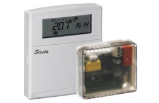
Termostato programable inalámbrico. 28 cambios de programación independiente para cada día. Función antihielo y vacaciones (off/on programado). Facilidad en traspasar el programa de un día a otro. Sensor de temperatura interno con escala de 5 a 35ºC. Diferencial ajustable de 0,1 a 3ºC tanto en calefacción como en refrigeración.
Selección calefacción o refrigeración por teclas (sin necesidad de entrar en programación).
Teclado de 5 botones para una programación fácil e intuitiva.
Indicación estado del contacto " refrigeracion" / "calefacción " y de la humedad ambiente.
Bloqueo escala de regulación.
Control telefónico GSM/línea fija
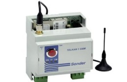
Controles remotos de equipos (calderas, radiadores, invernaderos…)vía SMS o llamada línea fija, multitonos (teclas del teléfono).Dimensiones: 70x90x58mm. Alimentación: 230V. 1 canal de salida con relé 12(7)A 250V Configuración en 9 idiomas.
Alarmas por cierre de contactos.
Informa del estado de alimentación, funcionamiento, cobertura y estado del canal.
(Modelo GSM no incluye tarjeta SIM)
Control telefónico GSM enchufable
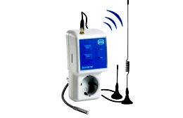
Controles remotos de equipos (calderas, radiadores, invernaderos…)vía SMS y alarma por cierre de contactos. Bidireccional, informa del estado mediante SMS. 1 Canal de salida con relé de 16(5)A 250V˜ y una sonda PTC2000. En caso de fallo de la red eléctrica, el canal recupera su estado anterior. Posibilidad de conexión temporizada de 1 minuto a 45 días.
Suministrado con 2 antenas de base imantada. No incluye tarjeta SIM.
Sistemas telecontrol y telemando
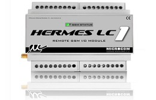
Equipo que permite controlar desde un teléfono GSM y mediante el servicio de mensajes cortos las incidencias en instalaciones remotas.
8 Entradas digitales. Entradas para sondas de temperatura.
2 Salidas por relé hasta 250V 5A + 4 salidas por colector abierto.
Fácil configuración mediante software de configuración bajo windows, tanto local como remotamente mediante llamada de datos GSM. Capacidad de reenviar la notificación de alarma mientras persiste la condición de alarma.
Alimentación a 12v.